Retour d'expérience
Outils IA
Un aperçu, pas une vérité absolue 🌞
Sommaire
Qui suis-je ?
Développeur fullstack et utilisateur quotidien d’outils IA.
Approche centrée sur l’impact et les résultats plutôt que la perfection technique.
⚠️ Avertissement
Biais de perception autour de l’IA
"L'IA peut tout résoudre"
"C'est surpuissant"
➔ Non, ce n'est pas un outil magique 🪄
On prend l'IA pour ses forces et ses limites, un arbitrage entre utilité et risque.
"Utiliser l'IA = accepter tout ce qu'elle propose"
➔ Non, l'IA propose et l'humain dispose 🧠
On doit toujours choisir de garder, modifier ou ignorer ce qu'elle produit.
Utiliser l'IA, c'est être assisté, donc moins légitime ? Comme si la compétence se mesurait au mal qu'on se donne ? Comme une honte, un tabou ou une question d'égo ?
➔ La valeur n’est pas dans le geste, mais dans ce qu’on apporte
➔ Un outil ne remplace pas le jugement : on reste responsable du résultat qu’on livre
➔ On peut questionner l'IA sans en faire un méchant ; elle n'est pas (encore) notre ennemie 🤖
🔗 Article de Frederic Bouchery — Depuis quand avez-vous honte de votre code ?
Le cycle de hype autour de l’IA

Pyramide des niveaux d'utilisation IA
Conseils & astuces
Quelques conseils pour appréhender les outils IA
Le FOMO n’est pas une stratégie d’apprentissage 📚
Au début tu relis tout ; plus tard tu sais quoi relire. 🔎
Attention à ne pas essayer de tuer une fourmi avec un lance-roquette 🐜💥
2 outils qui font partie de mon quotidien
➔ Chaque besoin, chaque contexte et chaque sensibilité sont différentes
concrets
Premier outil : Perplexity

Détails
Juste de l'IA conversationnelle ?
"C'est juste un ChatGPT qui fait des recherches Google ?"
C'est un moteur de réponse, avec un ton neutre et factuel, avec pour chaque affirmation les sources citées.
Cas concret
Peut-on faire confiance à ce qu'on lit ?
- Les sources sont là : on sait d’où vient l’info, ce n’est plus une réponse sans fondement, on peut avancer avec plus de confiance.
- Phase exploratoire accélérée : On cherche sans toujours savoir quoi chercher au départ ; l’outil raccourcit cette étape 🗺️
Exemple avec une question posée

Le raisonnement et la recherche de sources

Synthèse et réponse

Mention des sources pour chaque affirmation

Onglet "Liens" pour les sources

Recherche approfondie : pour aller plus loin

Espaces : un contexte commun et partageable

Widgets & usage dans la vie quotidienne

Quelques conseils
- 💡 Poser une question précise avec le contexte utile (stack, contraintes).
- 💡 S’appuyer sur les sources pour vérifier, pas seulement sur la synthèse.
- 💡 Quand c’est critique : croiser et tester avant de valider.
- 💡 Aucune donnée sensible dans le prompt (secrets, clients, prod).
- 💡 Itérer : une relance ciblée vaut mieux qu’un gros pavé initial.
Second outil : Cursor
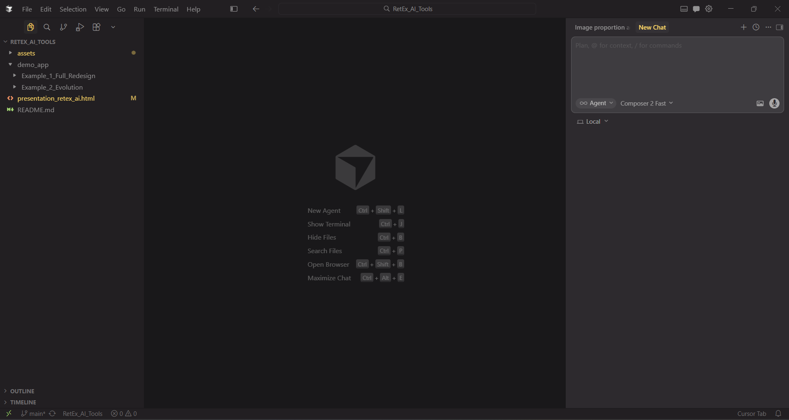
Un tas de modèles disponibles
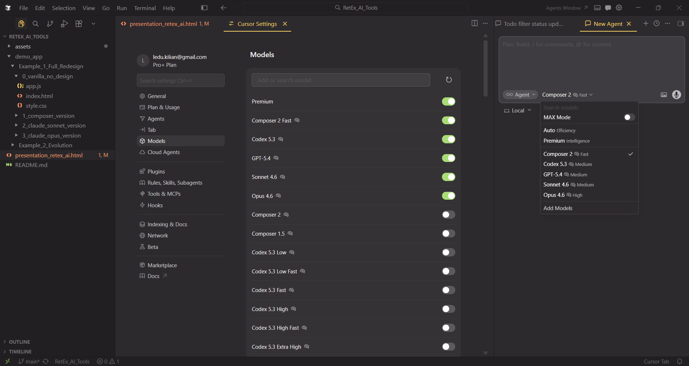
Les 3 modèles que j'utilise
| Modèle | Profil | Usage |
|---|---|---|
| Claude Opus 4.6 | Expert | Pour les grosses tâches, choix architecturaux ou bugs chiants |
| Claude Sonnet 4.6 | Polyvalent | Usage par défaut |
| Composer 2 | Rapide | Pour les petites tâches, actions rapides |
Un benchmark chiffré pour comparer ? Non, c'est chiant

Visualiser les capacités des différents modèles


Exemple d'utilisation
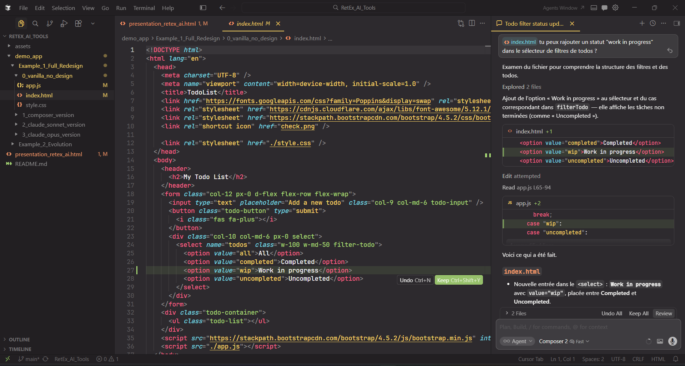
Récap' des fonctionnalités de base
- 👉 On prompte, ça code — Que ce soit un prompt général abstrait ou très précis
- 👉 On peut voir les changements en live — Différentiel comme GIT
- 👉 L’agent reconnaît le contexte — Il explore, interprète, comprend
- 👉 L’agent explique ce qu’il a fait — Résumé pour suivre sans tout relire
C’est le minimum de ce qu’on peut attendre en 2026 quand on développe en mode « agentique »
MCP : Supabase
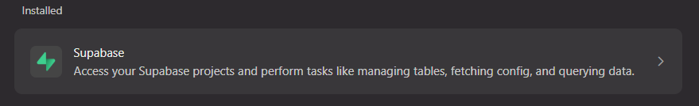
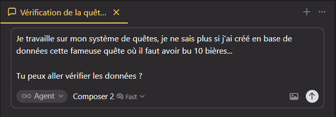
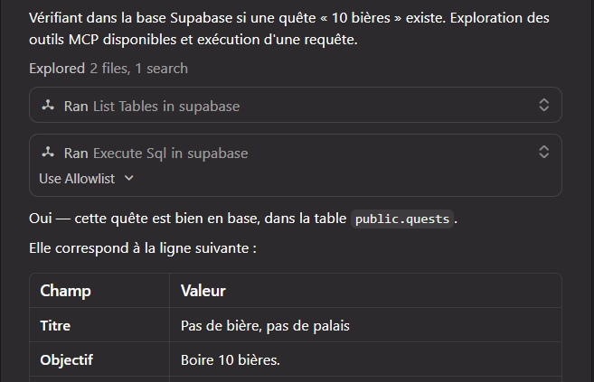
Pas de magie, juste des règles
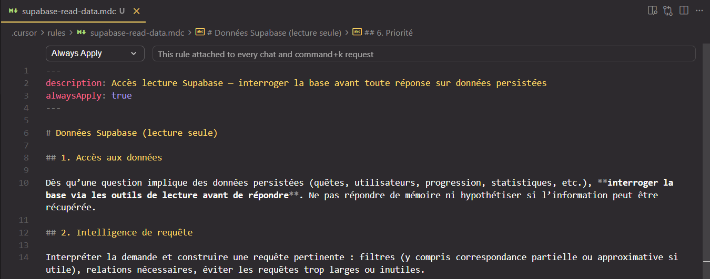
Mode Plan : Se rendre compte du chantier à réaliser
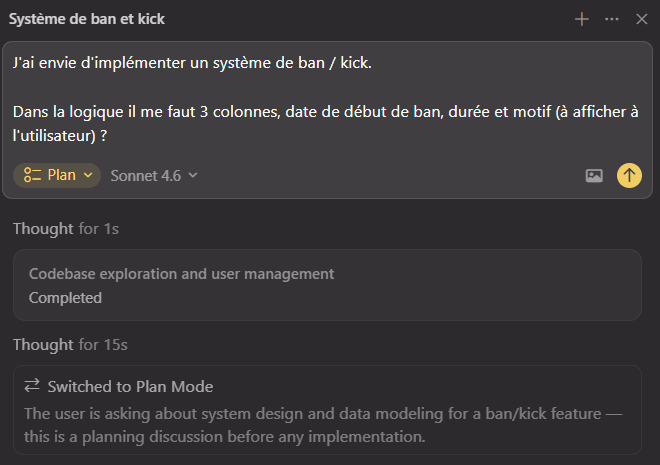
Mode Plan : Répondre à des questions
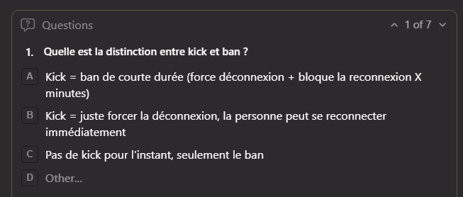
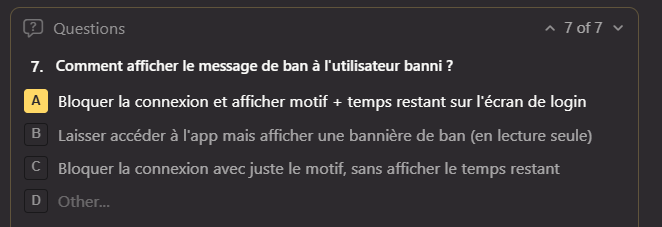
Mode Plan : On rédige le plan
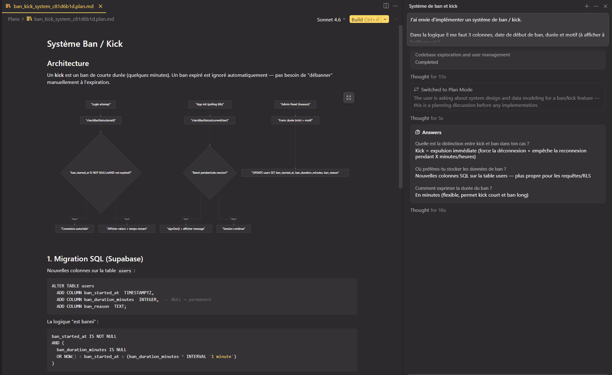
Mode Plan : On découpe en tâches
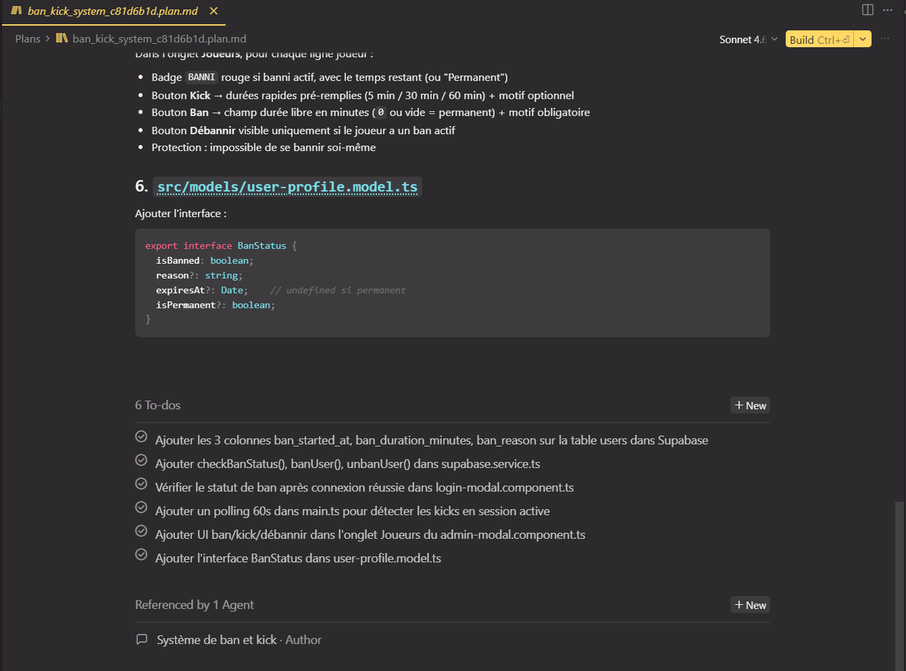
Mode Plan : On exécute
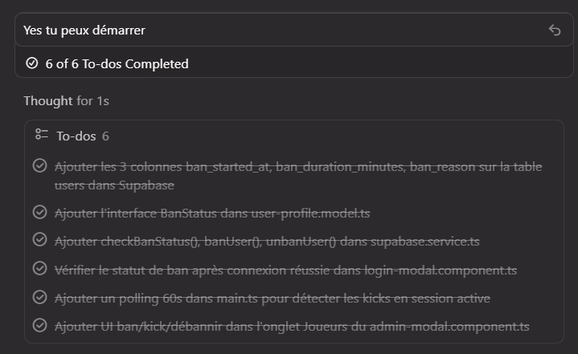
Mode Plan : On construit dans les nuages ??
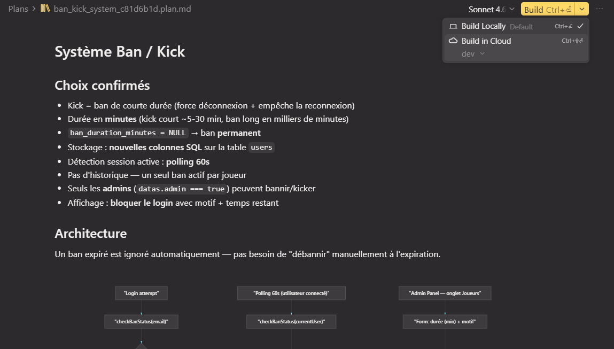
Agent web : formuler une demande
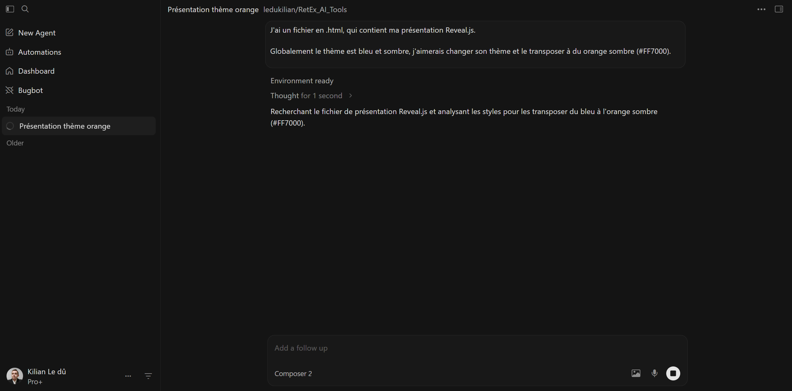
Agent web : Pull request
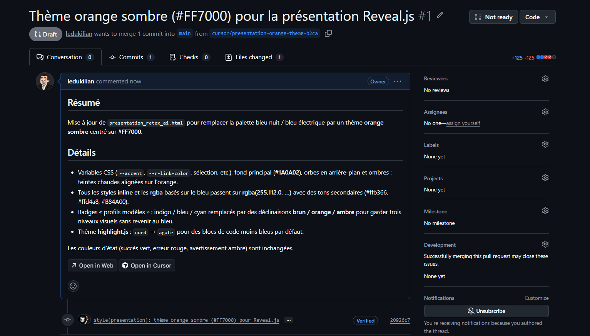
Agent web : Mais qui fait la revue de code ?
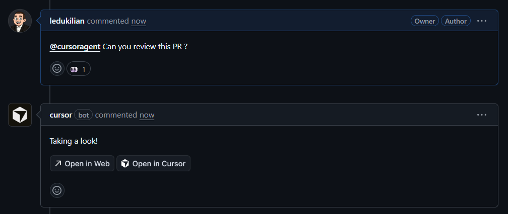
Agent web : Quand l'IA contrôle l'IA
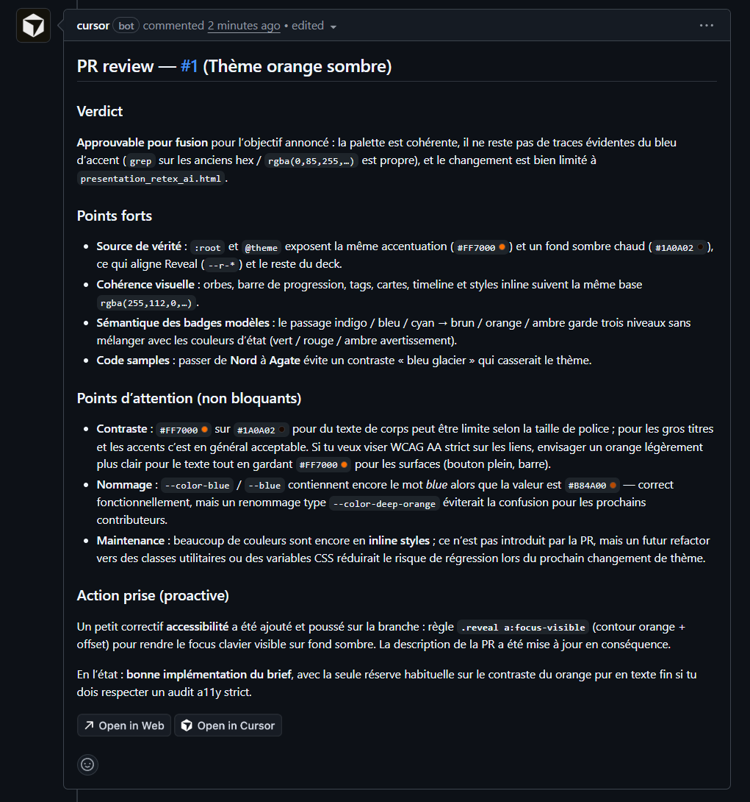
Récap' des fonctionnalités avancées
- 👉 MCP & outils branchés — Bases, APIs, services externes utilisables comme des « outils »
- 👉 Règles & contexte projet — Consignes persistantes, conventions, personnalité
- 👉 Mode Plan — Cartographier le chantier avant d’écrire du code, contrôler l'implémentation
- 👉 Agent long & arrière-plan — Tâches qui dépassent l’onglet : PR, cloud, exécution étalée.
Un ensemble de fonctionnalités qui permettent un tas de possibilités
D'autres exemples d'utilisation
Conclusion
Les questions légitimes et le doute
Quelques éléments de réponse
Quelques éléments de réponse
➔ L’objectif n’est pas d’être en avance ou précurseur, mais d’adopter au bon moment
On ne peut pas manquer un train qui n’est pas encore entré en gare 🚆
Les outils et l'exécution changent, mais les besoins restent.
Ce qui comptera vraiment à l'avenir
À vos
questions
- [1] Perplexity : perplexity.ai
- [2] Cursor : cursor.com
- [3] Étude : Labor market impacts of AI - Anthropic, mars 2026
- [4] Article : Frederic Bouchery — Depuis quand avez-vous honte de votre code ?